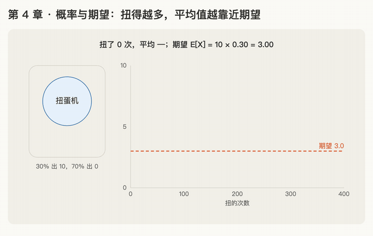

第 4 章 · 概率与期望 expectation：按概率的加权平均
本地运行
git clone https://github.com/wikieden/rl-from-scratch
cd rl-from-scratch/code/notebooks
pip install jupyterlab torch numpy
jupyter lab ch04_expectation.ipynb也可以下载后直接用 VS Code 打开 .ipynb 运行。需要 GPU 的章节在 Colab 里选「代码执行程序 → 更改运行时类型 → GPU」。
本章回答：环境有随机性，同一个动作这次拿 10、下次拿 0，"平均来看拿多少"怎么算？\(\mathbb{E}\) 这个符号是什么意思？
讲解日期：2026-11-13 · 上一章：第 3 章 折扣 · 下一章：第 5 章 马尔可夫决策过程
对应原文：Sutton & Barto 记号表（Summary of Notation，L619 起，L631–L638）里的 \(\Pr\{X = x\}\)、\(\mathbb{E}[X]\)；§2.1 动作价值是"期望奖励"（L2052 起）；本章是数学前置，书里没有单独一节
本章缩写：Pr = Probability（概率）；\(\mathbb{E}\) = Expectation（期望），读"E"；\(\Pr(X = x \mid Y = y)\) 中的竖线读"在……条件下"（conditional，条件）。全部缩写见 附录 · 缩写与术语表
讲解
第一步：概率：每种结果占几成，加起来是 1（2026-11-13）
类比：扭蛋机。 投一个币，掉出来的扭蛋有两种：
- 30% 的可能装着 10 块零食；
- 70% 的可能是空的（0 块）。
概率 probability 就是"每种结果占几成"，写成 0 到 1 之间的数：0.3 和 0.7。记号：
- \(X\)：这次扭蛋出来几块零食。它事先不知道，要扭了才知道，这种量叫随机变量 random variable；
- \(\Pr(X = 10)\)：读"X 等于 10 的概率"。
概率有一条铁律：所有可能的结果，概率加起来必须等于 1（0.3 + 0.7 = 1）。这和 Transformer 讲义第 3 章 softmax 的"比例加起来等于 1"是同一回事：softmax 输出的就是一组概率。
一句话：概率是每种结果占几成，都在 0 到 1 之间，所有结果加起来是 1。
第二步：期望 = 按概率的加权平均（2026-11-13）
问题：扭一次"平均来看"能拿几块？
不能简单把 10 和 0 平均成 5，因为出 0 的可能大得多。要按概率加权：
这就是期望 expectation，记作 \(\mathbb{E}[X]\)（读"X 的期望"）。一般写法：
读作：把每一种可能的值 x，乘上它出现的概率，再全部加起来。
你已经见过它了：Transformer 讲义第 4 章"按比例取信息"，就是 \(0.73 \times\) 一个向量 \(+ 0.27 \times\) 另一个向量。期望是同一个算法，只是"比例"换成了"概率"。
| Transformer 第 4 章 | 本章 | |
|---|---|---|
| 比例从哪来 | softmax 的权重 | 概率 |
| 加权的是什么 | 每个词的 v 向量 | 每种结果的数值 |
| 叫什么 | 加权平均 | 期望 |
再算一个：骰子 1–6 点，每面概率 \(\frac16\)：\(\mathbb{E} = (1+2+3+4+5+6) \times \frac16 = 3.5\)。注意 3.5 这个点数根本掷不出来：期望是"平均来看"，不一定是能真正出现的值。
一句话：期望 = 每个值 × 它的概率，全部加起来；就是按概率的加权平均。
第三步：多试几次，平均值会靠近期望（2026-11-13）
问题：概率往往不知道（扭蛋机不会告诉你 30%），期望怎么得到？
办法：多扭几次，算平均。 用代码扭了几次（附录有代码）：
| 扭几次 | 平均每次拿几块 |
|---|---|
| 10 次 | 3.0 |
| 100 次 | 2.5 |
| 10000 次 | 3.008 |
次数少时会偏（100 次那组偏低），次数越多越接近真正的期望 3。这叫大数定律 law of large numbers。
这对强化学习极其重要：智能体不知道环境的概率，但它能一遍遍去试，把试出来的结果取平均，就估计出了期望。第 7 章估价值、第 14 章蒙特卡洛方法，用的都是这个办法。
一句话：不知道概率时，多试几次取平均，平均值会越来越接近期望。
第四步：条件概率：竖线"在……条件下"（2026-11-13）
强化学习里的概率几乎都带一根竖线，比如第 5 章的 \(p(s' \mid s, a)\)。
条件概率：\(\Pr(X = x \mid Y = y)\) 读作"在 Y = y 的条件下，X = x 的概率"。竖线右边是已经知道的情况，左边是要猜的结果。
例子：扭蛋机有两台。
| 出 10 块的概率 | 出 0 的概率 | |
|---|---|---|
| 红色机器 | 0.3 | 0.7 |
| 蓝色机器 | 0.6 | 0.4 |
- \(\Pr(X = 10 \mid \text{红}) = 0.3\)；\(\Pr(X = 10 \mid \text{蓝}) = 0.6\)；
- 条件期望：\(\mathbb{E}[X \mid \text{红}] = 10 \times 0.3 = 3\)，\(\mathbb{E}[X \mid \text{蓝}] = 10 \times 0.6 = 6\)。
条件不同，概率和期望都跟着变。注意：每一行（固定一个条件）的概率加起来都是 1。
和后面的关系：第 7 章的价值 \(v(s) = \mathbb{E}[G_t \mid S_t = s]\)，读作"在现在处于状态 s 的条件下，回报的期望"。把这一行读懂，第 7 章就不难。
一句话：竖线右边是已知条件，左边是要猜的结果；换个条件，概率和期望都会变，每个条件下概率加起来都是 1。
动画演示：扭蛋扭得越多，平均值越靠近期望

可交互版：animations/l04-expectation.html（要能点按钮、拖滑块，需要用本地服务打开，见 animations/README.md"跑起来看"）。
怎么看：
- 左边扭蛋机，每帧扭一次，出 10 或 0；
- 右边曲线是"到目前为止的平均值"，虚线是期望 \(\mathbb{E}[X] = 3\)；
- 前几次抖得厉害，次数一多就贴着虚线走（第三步）；
- 拖滑块改"出 10 的概率"p，虚线移到 10p，曲线也跟着去。
练习与作答记录
题 1：一个转盘：50% 得 4 分，30% 得 0 分，20% 得 −5 分。先检查概率加起来是不是 1，再算期望。
作答：（待作答）
题 2：上题的转盘你转了 3 次，得到 4、4、4，平均是 4。这说明期望算错了吗？为什么？
作答：（待作答）
题 3：按第四步的蓝色机器，\(\Pr(X = 0 \mid \text{蓝})\) 是多少？\(\mathbb{E}[X \mid \text{蓝}]\) 是多少？
作答：（待作答）
口诀
概率是占几成，加起来等于一；
期望是加权平均：每个值乘概率再相加；
不知道概率就多试，平均会靠近期望；
竖线右边是已知，换了条件全都变。
本章复习卡片
- R07（期望 \(\mathbb{E}[X] = \sum_x x \Pr(X = x)\)；样本平均靠近期望；条件期望里竖线的意思）
附录 · 延伸阅读
留给以后深入学习用，不影响本章主线。★ 是建议先读的。
推荐阅读
| 读什么 | 读哪里 | 读它为了什么 |
|---|---|---|
| ★ Sutton & Barto 记号表 | sutton-barto-RLbook2020.txt 开头的 Summary of Notation（L619–L700，Pr 与 E 在 L631–L638） |
书里 \(\Pr\)、\(\mathbb{E}\)、竖线的标准写法 |
| Sutton & Barto §2.1 | L2052–L2125 | 第一次用期望：每台老虎机的"价值" = 期望奖励（第 13 章细讲） |
| Murphy《RL: An Overview》 | text/books/murphy-rl-overview-2412.05265.txt 记号部分 |
更完整的概率记号，想查时再翻 |
| CS 285 第 4 讲 | cs285-slides/lec-04.txt L92–L101（Expectations and stochastic systems） |
"In RL, we almost always care about expectations"：为什么 RL 处处是期望 |
| Transformer 讲义第 4 章 | transformer-deep-dive/notes/lessons/04-weighted-average.md |
加权平均：期望的"同一个算法" |
| Hands-on-RL 第 3 章 | chinese/Hands-on-RL/第3章-马尔可夫决策过程.ipynb |
中文的概率与 MDP 入门，带代码 |
数学原理
- 期望是线性的：\(\mathbb{E}[aX + bY] = a\,\mathbb{E}[X] + b\,\mathbb{E}[Y]\)。第 3 章的折扣回报 \(G_t\) 取期望时，可以一项一项拆开取：\(\mathbb{E}[G_t] = \mathbb{E}[R_{t+1}] + \gamma\,\mathbb{E}[R_{t+2}] + \cdots\)。
- 大数定律：独立地试 n 次，平均值 \(\frac1n\sum X_i \to \mathbb{E}[X]\)；误差大致随 \(\frac{1}{\sqrt n}\) 变小（试 100 倍次数，误差缩到十分之一）。
- 全期望公式（第 8 章要用）：\(\mathbb{E}[X] = \sum_y \Pr(Y = y)\,\mathbb{E}[X \mid Y = y]\)：先按条件分组算期望，再按每组的概率加权。例：红蓝两台机器各一半概率被选中，总期望 = 0.5 × 3 + 0.5 × 6 = 4.5。
公式清单
| 公式 | 意思 |
|---|---|
| \(\sum_x \Pr(X = x) = 1\) | 概率加起来是 1 |
| \(\mathbb{E}[X] = \sum_x x \Pr(X = x)\) | 期望 = 加权平均 |
| \(\frac1n\sum_{i=1}^n X_i \approx \mathbb{E}[X]\) | 样本平均估期望 |
| \(\mathbb{E}[X \mid Y = y] = \sum_x x \Pr(X = x \mid Y = y)\) | 条件期望 |
代码对照：把本章的数字用代码算一遍
代码在
cs285-deep-rl/solutions/chapter-code/ch04_expectation.py，测试tests/test_ch01_04.py。
同一章的 Jupyter notebook：cs285-deep-rl/solutions/chapter-code/notebooks/ch04_expectation.ipynb（讲解和代码放在一起，一格一格边读边跑；代码都写在格子里，Colab 也能直接打开）。
bash cd cs285-deep-rl/solutions/chapter-code uv run python ch04_expectation.py
| 讲义 | 代码 | 跑出来 |
|---|---|---|
| 扭蛋期望 | expectation([10, 0], [0.3, 0.7]) |
3.0 |
| 扭 10 / 100 / 10000 次 | sample_mean(vals, ps, n) |
3.0 / 2.5 / 3.008 |
| 骰子 | expectation(range(1, 7), [1/6] * 6) |
3.5 |
关键几行：
float(values @ probs) # 期望：值和概率做点积
rng.choice(values, size=n, p=probs).mean() # 按概率抽 n 次再取平均
代码里才看得到的：期望就是"值向量"和"概率向量"的点积（Transformer 讲义第 2 章）：对位相乘再相加。rng = np.random.default_rng(0) 固定了随机种子，每次跑出来的 2.5、3.008 都一样，方便核对。
自己改一改（不影响练习答案）：
- 骰子扭 10 / 100 / 10000 次：
sample_mean(range(1, 7), [1/6] * 6, n)→ 3.8、3.77、3.496，越来越接近期望 3.5。换个seed再跑，前两个数会变，最后一个几乎不变。 - 把扭蛋概率改成一半一半：
expectation([10, 0], [0.5, 0.5])→ 5.0。期望跟着概率走。